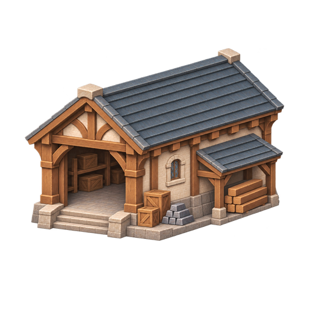
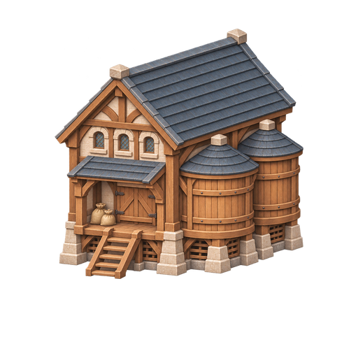
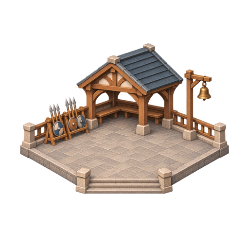
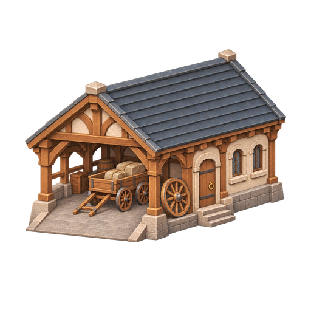
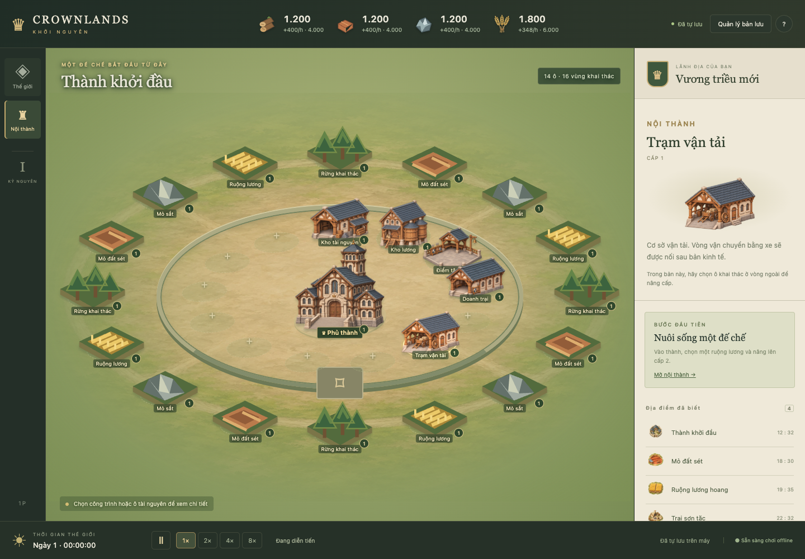
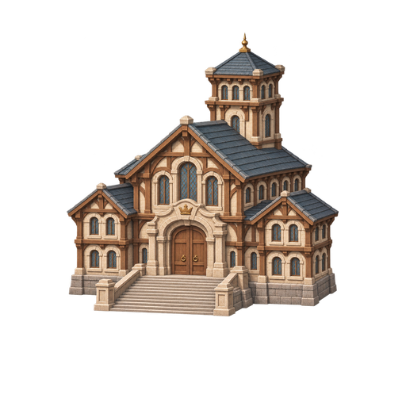
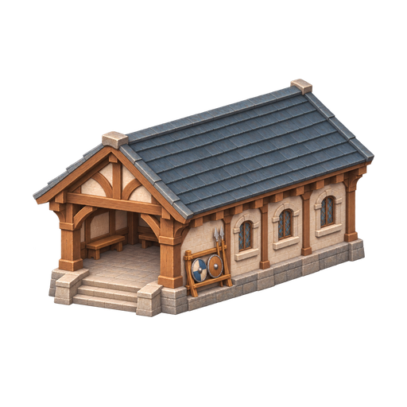

S02 · MỐC HÌNH 1
Kho tài nguyên
Cửa hàng rộng, kiện gỗ và thỏi sắt. Không gian chứa vật tư có mái che phụ.
Prompt & nguồn →Đá sáng, khung gỗ và mái ngói xanh xám theo mẫu Phủ v2.
Mỗi nhà có dáng riêng; Phủ giữ vai trò nổi bật nhất.

Cửa hàng rộng, kiện gỗ và thỏi sắt. Không gian chứa vật tư có mái che phụ.
Prompt & nguồn →
Kho nâng cao trên trụ đá, hai bồn chứa tròn và sàn nhận lương.
Prompt & nguồn →
Sân mở, giá giáo và khiên, mái trú cùng chuông báo hiệu.
Prompt & nguồn →
Nhà xe có mái rộng, xe chở hàng và bánh dự phòng; lối xe vào bằng đường dốc.
Prompt & nguồn →Đúng vị trí trong bản chơi. Bấm vào nhà để xem ảnh và chức năng trong bảng chi tiết.



Phủ v2 đã được chọn; Doanh trại là proof hiện có.
Bốn concept mới chưa được coi là asset đã duyệt hoặc export cuối.